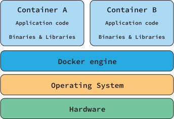
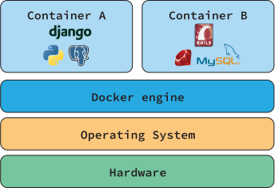
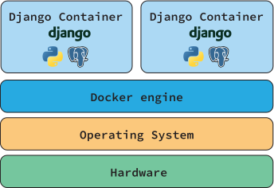
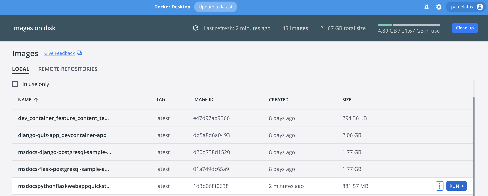
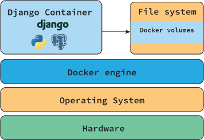
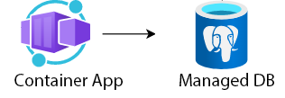
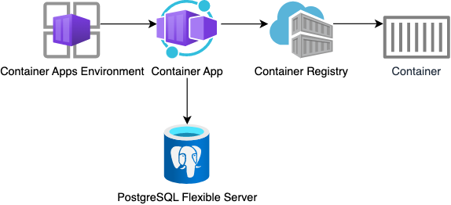
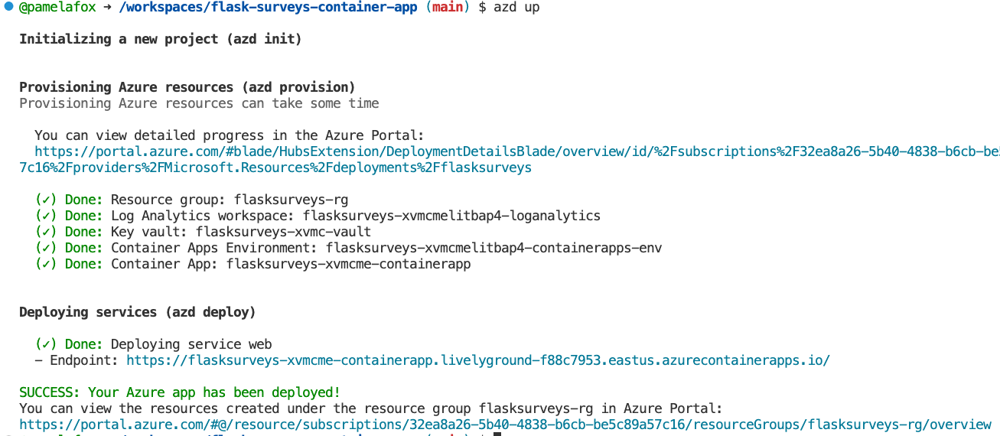

Python Web Apps:
Containerization
aka.ms/python-web-apps-containers
Meet Pamela

Python Cloud Advocate at Microsoft
Formerly: UC Berkeley, Coursera, Khan Academy, Google
Find Pamela online at:
| Mastodon | @pamelafox@fosstodon.org |
| @pamelafox | |
| GitHub | www.github.com/pamelafox |
| Website | pamelafox.org |
Today's topics

- Intro to Containers
- Databases in containers
- Hosting a container
Environment setup
To follow along with the live coding, your options are:
- Online dev with Codespaces:
- Local development with VS Code:
- Local development with any editor:
Docker 101

Docker overview
The Docker engine runs multiple Docker containers, where each container is an isolated environment.
Docker overview example
Each container can be a very different environment, with binaries and libraries dependent on the application.
Why Docker?
- Environment consistency: Ensure that the developer environment, test environment, staging environment, and production environments are the same.
- Application portability: Easy to run the application on new hardware if old hardware fails or if application needs to scale.
- Efficient hardware use: A machine can run multiple containers to make optimal use of its resources.
Docker images
A container image is a software package that includes
everything needed to run an application.
A container is a running instance of a container image.
Docker images
Multiple containers can be run from the same image.
Image registries
A registry is a place to store and share images.
Commonly used image registries:
- Docker Hub: contains many images, including official images for python, postgres, Unix systems, etc.
- GitHub container registry
- Azure container registry
- AWS container registry
- Google Cloud container registry
Image layers
A container image often starts off with a base image, and then adds layers on top of it.
For example:
- Base image: Ubuntu 20.04
- Layer 1: Python 3.12
- Layer 2: Flask 2.0
- Layer 3: Your app
Docker can cache each layer, which improves performance.
Containerizing
Python apps

Containerization steps
- Write a Dockerfile
- Build image from Dockerfile
- Run container using built image
Dockerfile format
A Dockerfile includes:
| The base or parent image* | FROM python:3.12
|
| Additional software | RUN pip3 install Flask gunicorn
|
| Application code | WORKDIR /codeCOPY . .
|
| Services to expose (storage/network) | EXPOSE 50505
|
| Command to run upon launching container | ENTRYPOINT ["gunicorn", "-c", "gunicorn.conf.py", "app:app"]
|
*Find existing images in registries, like DockerHub.
Dockerfile for Flask
From this repo:
github.com/pamelafox/simple-flask-server-container
aka.ms/flask-container
A complete file:
FROM python:3.12
WORKDIR /code
COPY requirements.txt .
RUN pip3 install -r requirements.txt
COPY . .
EXPOSE 50505
ENTRYPOINT ["gunicorn", "-c", "gunicorn.conf.py", "app:app"]
📖 Learn more: Docker images layer and cache
Add a dockerignore file
Prevent unnecessary files from being copied to the image:
.git*
.venv/
**/*.pyc
__pycache__/
Building the image
Using the docker build command:
docker build --tag flaskapp .
Using the VS Code Docker extension:

Running the container
Using the docker run command:
docker run --publish 50505:50505 flaskapp
Using Docker Desktop:
You can also use the VS Code Docker extension to run containers.
Exercise: Run a container
Starting from this repo:
github.com/pamelafox/simple-flask-server-container
- Follow the Local development with Docker steps.
- Try changing the base image to a higher Python version number and re-building / re-running.
- Try changing the HTML code and re-building / re-running.
Databases in containers
Sample Flask app with DB
From this repo:
github.com/pamelafox/flask-surveys-container-app
aka.ms/flask-db-container
@app.route('/surveys', methods=['GET'])
def surveys_list_page():
surveys = Survey.query.all()
return render_template('surveys_list.html', surveys=surveys)
@app.route('/surveys/', methods=['GET'])
def survey_page(survey_id):
survey = Survey.query.where(Survey.id == survey_id).first()
answers = Survey.query.where(Answer.survey==survey_id)
return render_template('survey_details.html', survey=survey, answers=answers, already_voted='survey_id' in request.cookies)
👀 Demo: aka.ms/live-survey-app
Data persistence in containers
Data can be written to a container's file system, but:
- Removing a container removes the data
- Container data is difficult to move between environments
- Container storage drives are less performant
If you need to persist data, you should store it outside the container.
Docker volumes
A volume is a directory on the host machine that is mapped to a directory in the container.
When developing with databases locally, use a volume to store the data for the database.
Running PostgreSQL with Docker
Create a volume:
docker volume create postgres-data
Create a network for the containers to communicate over:
docker network create postgres-net
Run a PostgreSQL container with the volume and network:
docker run --rm -d -v postgres-data:/var/lib/postgresql/data \
--network postgres-net --name db \
-e POSTGRES_USER=app_user -e POSTGRES_PASSWORD=app_password \
postgres
Connecting the app to the DB
Inside src folder, make .env for the database connection:
DBHOST=db
DBNAME=postgres
DBUSER=app_user
DBPASS=app_password
Inside src folder, build the container:
docker build --tag flasksurveyscontainerapp .
Run the app container over the same network:
docker run --rm --network postgres-net \
--name flask-db-app -p 50505:50505 \
flasksurveyscontainerapp
Docker compose
Docker compose is a tool for defining and running multi-container Docker apps,
and docker-compose.yaml is a YAML file that defines the services that make up your app.
services:
db:
image: postgres
restart: always
environment:
POSTGRES_PASSWORD: ${DBPASS:?database password not set}
POSTGRES_USER: ${DBUSER:?database user not set}
POSTGRES_DB: ${DBNAME:?database name not set}
volumes:
- postgres-data:/var/lib/postgresql/data
networks:
- postgres-net
app:
build:
context: .
ports:
- 50505:50505
networks:
- postgres-net
volumes:
postgres-data:
networks:
postgres-net:
Run multiple containers
In the root folder, copy the .env file from src/.env
From the root folder, run the app and database containers:
docker-compose up
📖 Learn more: docker compose up reference
Exercise: Run multiple containers
Using this repo:
github.com/pamelafox/flask-surveys-container-app
aka.ms/flask-db-container
- Follow the Local development with Docker steps.
- Make two surveys in the app.
- Modify the /surveys route to order the surveys by topic (A-Z), using order_by. The app should reload automatically when you save the file.
- Stop the containers with CTRL+C.
- Change the
entrypointindocker-compose.yamltoentrypoint.shinstead, and re-rundocker compose up. It should no longer reload when Python files change.
Hosting containers
on Azure!

Hosting considerations
- How much traffic do you expect?
- Do you need scale-to-zero?
- How variable will the traffic be?
- How much control do you need over the environment?
Azure hosting options
| Cloud | Azure | |||
|---|---|---|---|---|
| Environment | Containers | PaaS | ||
| Azure Kubernetes Service | Container Management | Azure App Service | Serverless | |
| Azure Container Apps | Azure Functions | |||
All offerings let developers bring containers!
Azure Container Apps is a recent offering that is optimized for running containers.
Storage in Azure Container Apps
For temporary storage, you can write to file system or have an ephemeral volume in a container app.
For permanent storage, you can mount Azure Files but performance is too limited to be useful for a database.
Use a managed database service outside the container.

Azure managed databases services
These are just some of the options:
| Option | Description |
|---|---|
| Azure CosmosDB | Distributed DB with multiple APIs, including NoSQL, MongoDB and Cassandra. |
| Azure Cosmos DB for PostgreSQL | Distributed DB using PostgreSQL and Citus extension. Scales vertically and horizontally. |
| Azure Database for PostgreSQL – Flexible Server | Fully managed service with vertical scaling. |
Hosting on Azure Container Apps
A Container Apps Environment manages a Container App which pulls its image from an Azure Container Registry.
The Container App connects with the PostgreSQL server over the internal Azure network.
Deploying to Azure Container Apps
Using the Azure Developer CLI:
Exercise: Deploy a container app
Starting from this repo:
github.com/pamelafox/flask-surveys-container-app
aka.ms/flask-db-container
- Sign up for a free Azure account and create a subscription.
- If not in Codespace, install the Azure Developer CLI and Docker Desktop.
- Login to your Azure account:
azd auth login - Deploy the app:
azd up - Once you've verified the app is working, run
azd downto un-deploy the app.
Container App templates: Simple
| Repo | Description |
|---|---|
| simple-fastapi-container | FastAPI app with a single endpoint |
| flask-charts-api-container-app | Container Apps + CDN |
| flask-gallery-container-app | Container Apps + CDN
|
Container Apps templates: With DB
| Framework | PostgreSQL Flexible | CosmosDB for PostgreSQL | PostgreSQL Container Apps Addon | CosmosDB for MongoDB |
|---|---|---|---|---|
| Django | Repo | Repo | Repo | - |
| FastAPI | Repo | Repo | Repo | - |
| Flask | Repo | Repo | Repo | Repo |
All generated from Azure Python Standardized Template Generator (cookiecutter project)
Container Apps templates: With AI
| Repo | Description |
|---|---|
| openai-chat-backend-fastapi | FastAPI + OpenAI (Backend only) |
| openai-chat-app-quickstart | Quart + OpenAI (Full-stack) |
| openai-chat-app-entra-auth-builtin | OpenAI + Entra (ACA Built-in auth) |
| openai-chat-app-entra-auth-local | OpenAI + Entra + Azure Redis |
| langfuse-on-azure | Langfuse image + PostgreSQL |
More resources

Any questions?